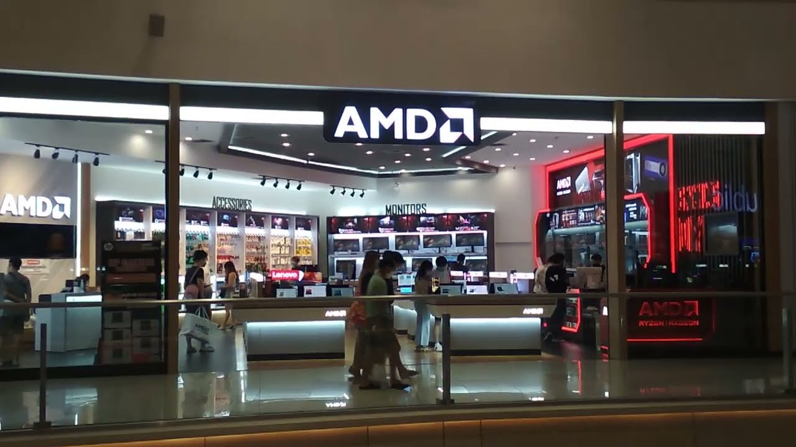

Sobre nosotros...

¡Bienvenido a TodoAMD! Somos una empresa especializada en la venta de procesadores AMD Ryzen de la gama Gaming, importados directamente desde la reconocida fábrica AMD. Desde nuestra sucursal en Quilmes, nos dedicamos a brindar a nuestros clientes productos de alta calidad y rendimiento para potenciar sus experiencias de juego.
TodoAMD fue fundada en 2011 con la visión de ofrecer a los entusiastas de los videojuegos una amplia variedad de procesadores AMD Ryzen, una marca líder en el mercado de la tecnología. Nos enorgullece trabajar directamente con la fábrica de AMD para asegurar que cada procesador que llega a tus manos cumpla con los más altos estándares de calidad.
En TodoAMD, entendemos la importancia de un rendimiento excepcional para disfrutar al máximo de tus juegos favoritos. Nuestro equipo de expertos apasionados por la tecnología está siempre disponible para brindarte asesoramiento personalizado y ayudarte a elegir el procesador ideal que se adapte a tus necesidades y preferencias.
Además de ofrecerte productos de primera calidad, nos esforzamos por brindarte una experiencia de compra cómoda y segura. Nuestro sitio web está diseñado para ser intuitivo y fácil de navegar, y contamos con un eficiente sistema de envío para que recibas tus productos en tiempo récord.
Estamos comprometidos con la satisfacción de nuestros clientes y nos esforzamos por superar tus expectativas en cada interacción. Nos encanta formar parte de tu experiencia de juego y queremos ser tu socio confiable en el mundo de la tecnología.
¡Gracias por elegir TodoAMD! Estamos emocionados de acompañarte en tu viaje gaming y ofrecerte los mejores procesadores AMD Ryzen para llevar tus juegos al siguiente nivel.